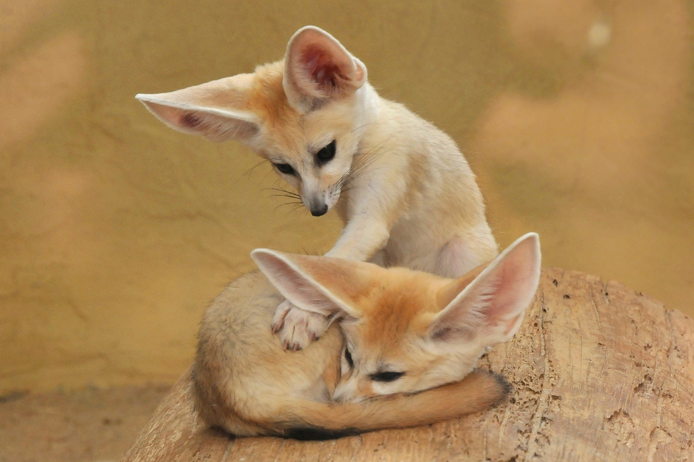

Богатству фауны нет границ!
Лисица фенек (лат. Vulpes zerda) – это пустынная лисица, которая отличается от других видов очень маленькими размерами тела и непропорционально большими ушами. Это животное относится к отряду хищные, семейству псовые, роду лисицы, виду фенек.Свое название этот зверек получил от арабского варианта слова «лиса» — «fanak».
Размеры фенека не больше обычной кошки или маленькой собаки. Длина тела составляет в среднем 35 сантиметров, длина хвоста – 30 сантиметров, высота зверьков – до 25 сантиметров, а вес всего лишь 1,5 килограмма! Средняя продолжительность жизни фенека составляет 12 лет.
Лисица фенек имеет маленькую заостренную мордочку, большие глаза и маленькие зубы. Характерной особенностью этих лисичек, благодаря которой их тяжело спутать с другими животными рода лисиц, являются уши фенека. При маленьких размерах головы они смотрятся совсем непропорционально. Такие большие уши нужны животному не только для того, чтобы он мог расслышать малейший шорох рядом, но и для охлаждения тела в жарком климате.
Длина ушей достигает 15 см!
Фенек обитает в пустынях Северной Африки. Живут зверьки небольшими группами, однако на охоту отправляются отдельно, каждый сам по себе.
В дикой природе фенек выбирает для проживания места вблизи зарослей травы или мелкого кустарника, при их отсутствии он также может селиться в пещерах и расщелинах. Но чаще всего животные роют норы со сложной системой ходов, которые имеют 2-3 выхода. За одну ночь они способны выкопать нору глубиной более 5-ти метров.
Интересный факт: ушастый фенек умеет прыгать почти на 80 сантиметров в высоту и на 1 метр в длину.Пищу лиса фенек добывает, вырывая ее из песка. Большую часть рациона животного составляют мелкие птицы и рептилии, а также насекомые (чаще всего саранча). В водопое пустынный лис не нуждается, так как в ходе эволюции настолько хорошо приспособился к жаркому и сухому климату пустынь, что подолгу может обходиться без воды, получая жидкость из поедаемой пищи – из листьев, плодов или корней растений, из мяса.
Купить лису фенёк можно, начиная от 400$
Благодаря своей внешности маленькая лисичка фенек в последнее время стала популярным экзотическим домашним питомцем. Однако, домашняя лиса фенек – не самый простой в плане содержания питомец.